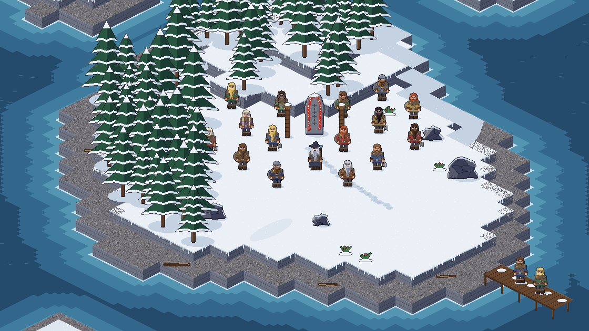
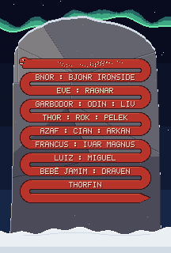

A ilha

O mundo é enorme e quase todo coberto pela névoa. Arraste para navegar, use dois dedos (ou a roda do mouse) para aproximar e toque num colono para ver a ficha.

A pedra dos fundadores
Os 20 primeiros colonos têm o nome gravado na pedra, para sempre.
Como nas pedras rúnicas de verdade, os nomes ficam gravados dentro do corpo da serpente.
A primeira volta já estava raspada quando eles chegaram. Ninguém sabe de quem era o nome.
Os 20 nomes já estão gravados. A serpente está completa.
Os moradores
Nenhum colono com esse nome. Ainda dá tempo de embarcar.
Salão dos que partiram
Ninguém partiu ainda. Quem deixa a ilha pega a febre do inverno, e depois de 7 dias vem para cá.
Como entrar
- Siga a saga no Instagram: stjarnavik.
- Comente seu nome no Reel mais novo. Só o nome já basta; a profissão é opcional.
- Você desembarca no próximo episódio com o nome do jeito que comentou. No botão i ao lado do nome tem uma ideia de nome nórdico; só troca quem pedir.
Cada pessoa tem um colono. Você começa como karl e sobe participando: drengr, húskarl, hersir e, um dia, jarl.